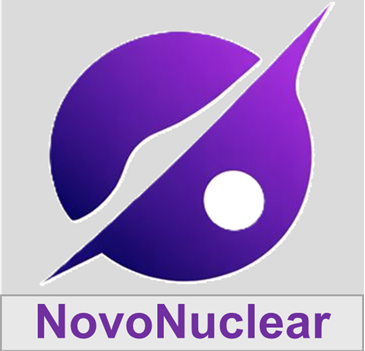
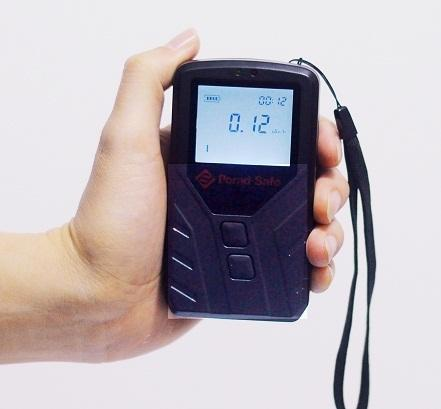
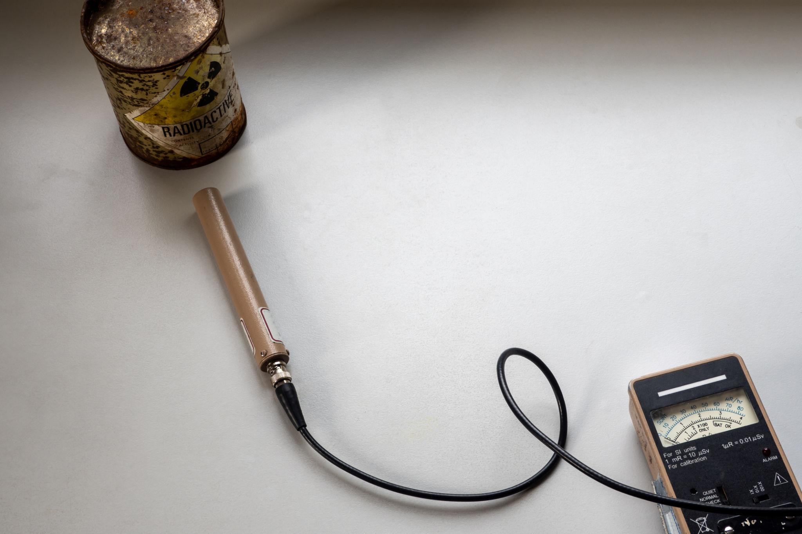
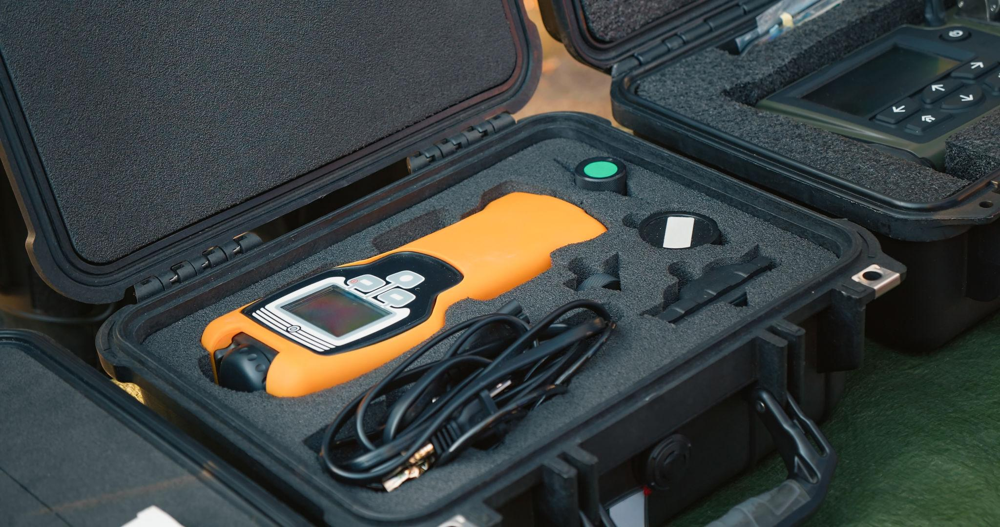
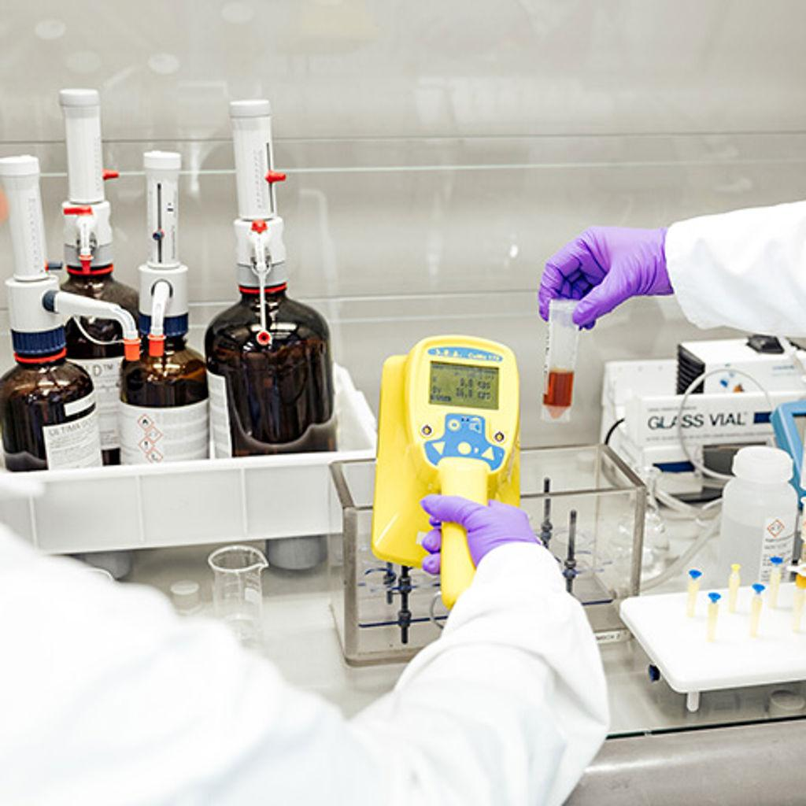

Manufacturing Precision Radiation Measurement Instruments
We are an R&D-focused manufacturer engaged in the development of radiation monitoring systems, radon detectors, and scintillation-based detectors for research, medical, and environmental applications.




Novonuclear is engaged in the research, development, and manufacturing of radiation measurement and detection instruments. Our focus is on providing reliable, reproducible, and scientifically validated solutions for radon monitoring and radiation detection.
Portable Radiation Identification and Spectroscopy System